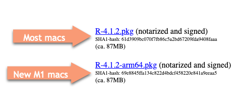

13 Installing R and RStudio
In this chapter
- Install R , RStudio
- The power of packages, especially the
tidyverse - Change default settings for working in data reporting
Install R and RStudio
- R is the programming language itself, and has to be installed first. Andrew Heiss has called it the “engine” behind your work.
- RStudio, made by the company posit.co, is the way we’ll interact with the programming language. Install it second. Heiss calls it the “fancy car” that you drive.
- Packages are extra sets of programs that perform specialized jobs more easily than working with the “base” R language. A package must be installed once on your computer, then invoked to use them in a program. R is almost useless without them.
Follow this interactive tutorial on installing R, RStudio and the tidyverse on your computer:
https://learnr-examples.shinyapps.io/ex-setup-r/#section-welcome .
There are several differences between the video and today:
- The name of the company has changed from RStudio to Posit, so some of the links may now take you to the Posit site. The name of the software – RStudio – has not changed.
- The tidyverse will take much longer to finish installation. It has a lot to do and often looks like it’s stalled.
Install R
There are two versions of R for Mac users: The traditional one and the one for the new M1 chip on the latest machines. Choose the one that matches your machine by checking the apple in the upper left and looking at “About this Mac”. It will say “Apple M1” as the processor if you have it.
Link to find your version: https://cloud.r-project.org/
Mac OS:

Windows 10/11:
You only need the “base” version for our class.
Install RStudio
There is no special RStudio version for Mac M1’s. As of December, 2022, these are the versions:
Check for later versions of the Desktop product on the Posit website.
If you get an error during or after installation about “command line tools”, ask me to help you. It’s a simple fix. RStudio will actually work without it, but you’ll get a lot of annoying warnings.
If later during package installation you get errors that mention “git” or “xcode-select” just say yes!
If R asks you if you want to install packages from “source”, say “No”.
Emergency backup plan
Posit Cloud allows you to use R and RStudio without installing it on your computer.
It has its problems, but it works for some of what we do. Before long, it may require you spend $5/month on a paid account, since it has extremely limited capacity in the free version, but it’s enough to get you started. You can probably do everything you need to do for this course in a single project.
We can work together if you’re having trouble installing the software. You can also use the lab in Cronkite 320 and in our classroom, where all of the software is already installed.
See me if you want to use the cloud version instead of your own computer or those in Cronkite labs. You’ll need to adapt some of the instructions in this and the next couple of chapters, and will have to turn in your assignments differently.
You will have to upload any data or images or other material you want to use, and you will have to download your documents, programs and data in order to turn them in – you can’t use the link to the Posit Cloud, or you’ll run out of free time very quickly.
Some limitations:
- It just doesn’t work very well on the Quarto documents that we’ll be using. You probably won’t be able to see your finished document.
- You can only use 1GB RAM - this won’t be enough for some of our projects.
- You only get 25 hours per month to use it. During the key part of our course, this SHOULD not be enough.
- It sometimes chokes! We’ve had it lose student’s work.
Unlocking packages and the tidyverse
The real power of R comes with packages. Packages are bundles of programs that others have found useful to extend the base R language. R is almost useless without them. There are more than 10,000 packages available for R, each doing a special job.
If you followed along with the tutorial, the last thing you did was install a “package” called the tidyverse. Almost everything we do from now on depends on that step.
Most of the materials you see related to programming in R have some reference to the tidyverse. One problem with having a lot of packages, often written by hobbyists, is that they’re not very consistent. One might use a comma where another uses some dots, for example. One might expect your data to come in the “spreadsheet” form that we studied earlier in this book, and others might expect it to come in the “database” form.
The tidyverse packages up a whole set of other packages that are designed to work together smoothly with similar grammar and syntax. It’s particularly useful for the kind of work reporters do – importing, cleaning and analyzing data that we get from others and can’t control how it’s structured. It works best on granular data that arrives in database form rather than tabular statistics that come in aggregated spreadsheets, but it has methods to convert across these forms.
For many reporters (myself included), R was too difficult to learn before the tidyverse came around. We’ll be working almost exclusively within the tidyverse in this course.
When you Google for help, put the word “tidyverse” somewhere in your query. Otherwise, you may get answers that look inscrutable and unfamiliar.
The tidyverse is the brainchild of Hadley Wickham, a statistician from New Zealand, who famously identified tidy data principles we’ve implicitly followed all semester. He’s currently the chief data scientist for RStudio in Houston.
Set up RStudio for data reporting
Staying organized is one of the challenges of data reporting – you’re constantly re-downloading and re-jiggering your analysis and it’s easy to get your material separated. This setup helps ensure that you always know where to find your work and can move it to another comptuer seamlessly.
Before you start, decide on a folder you’ll use to store all of your R work.
Create a folder called
maij-workingwithin your Documents folder (or on the root folder of your portable hard drive)Start up RStudio (NOT R) , and choose
Tools->Global options(in a Mac)Make sure that all of the options to save .Rdata and load files on startup are UN-checked
Here’s a video of what you should do :